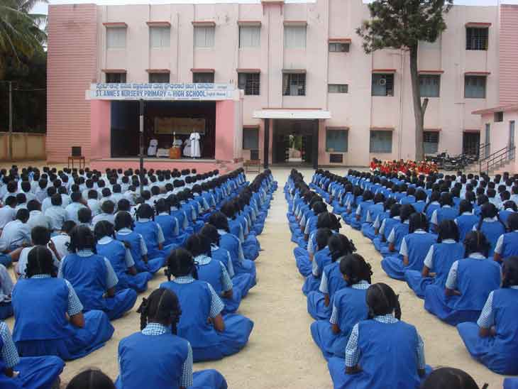
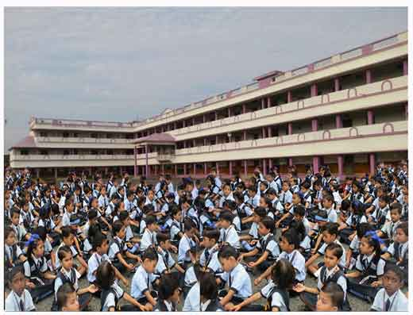
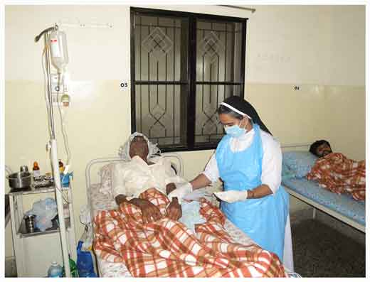

“Live a life of love,
Breathe a breath of Service”
"An education is the fullness of humanity should be the defining feature of Catholic Schools" -
Pope Francis.
Sisters of St. Anne Bangalore is a religious community of sisters committed to the cause of education.
Through our vast network of over hundred educational institutions all over the country, the SAB’s have
faithfully adhered to the ideal of integration trying to bring about a harmonious blending of the spiritual
values with the secular, modernity with heritage, competitiveness with co-operation, technology with
humanism, self-reliance and social sensitivity.

We firmly believe that the education of childrenhelps to create a better human society.
Thus, we seek to impart a sound education, leading to the spiritual, intellectual, physical,
social and emotional development of the child.
The education imparted by SAB’S opens the heart rather than the mind and pursues excellence in all
aspects of life and activity. Every child is groomed to grow into competent and creative individuals
capable of providing constructive leadership to a world order. The students are encouraged to make
sound moral judgement based on a well- formed consciousnessand put them into practice with a sense of
personal commitment.
We aim at achieving this objective with child centred and activity-oriented methods with utmost care,
love, understanding and firmness so as to inculcate in the young minds, the moral, ethical and cultural
values, developing a sense of social responsibility and religious tolerance and enhancing competence and
confidence to meet the challenges that lie ahead.

Bp. Stephen Louis Charbonnaux our founder was a visionary in the universalization of education and making
it available to all sections of the society; the poor, the downtrodden especially girls and women. Keeping
the spirit of our founder, we the educators of SAB family develop the young minds and hearts especially
those in peripheries to create healthy human beings for God and Society. We instil in the children a
thirst for truth and wisdom, restore the Nature, imprint deepest roots of divine and human values,
convictions to grow and become fruitful, withstanding and rising above the storms of life.
As St. John Paul II said “What an awesome responsibility and privilege is ours in the teaching
profession”.
We as Educators channelize the young minds with single minded devotion to achieve their goal thus
become "Trees planted by the Stream: Committed to reach out to the people in peripheries and to
restore the Nature."
“Let us touch the dying, the poor, the lonely and the unwanted according to the graces
we have received and let us not be ashamed or slow to do the humble work” -St. Mother Theresa
The Church needs you and me, the consecrated persons to be a blessing and respond to the cry of the poor. We
are debtors towards the poor for they help us to recognize the beauty of the Gospel. The need is very obvious
that we require the compatibility of empathetic listening, concern for the suffering and misfortunate people.
It is time to assemble all our efforts to pass it on to the other selves from good to better, better to best,
designing, scheduling, planning and operating.
In par with the aim of our Founder, the involvement of our sisters in the field of social apostolate are commendable.
We enable the marginalized to experience the compassionate love of Christ through the care for the Differently Abled and
aged. We take effort in Networking with government and Non - Governmental Organizations to channelize the resources which
are beneficial to the needy. Establishment of Day-care centers for children and the aged, residential home for the senior
citizens, Eco-Psycho-Spirituality Centre, free hostels, residential training programs and counselling offered are praise worthy.
Healing was essential to the ministry of Jesus, because he had the power to perform miracles, itflowed from within him as heat from the sun. The healing ministry of Jesus symbolizes his success in the spiritual warfare between Himself and Satan. Jesus had compassion equal to His power. We the SAB follow the same spirit of Jesus in our healing ministry.
We run hospitals, dispensaries and primary health centres to take care of the sick through curative and preventive methods.

We work in various capacities such as doctors, administrators, nursing staff, paramedical staff such as pharmacists,
Lab-Technicians etc. We undertake this ministry regardless of caste, creed, religion and economic status by
working in the hospitals, health centres, dispensaries, mobile clinics and other outreach programmes.
Sisters in mission areas give much care to interior villages where medical facilities are not available at all.
The sisters thus bring about healing to the sick, and give Eucharistic Love to each one of them and draw them to
the Divine Saviour in the Eucharist with their tenderness and care.
Sisters working in the hospitals arrange blood donation camps, free medical camps and blood group determination
camps. Effective measures are taken to give proper awareness of the menace of AIDS. In order to ensure prevention
of this terrific disease AIDS awareness programmes are launched. Sisters organize awareness classes and extension
rogrammes for the economically backward classes. Our sisters go to the houses in parishes to dress the wounds and cater
to the health and hygiene factors who have none to take care of. They prepare these patients to receive sacraments also.
The first task of our founder was the pastoral visitation, he always gave great importance to such pastoral
tours though it involved long and tedious journey. Imbibing the spirit of our founder we take keen interest in pastoral
activities of the Local churches, such as teaching catechism, pious organizations, family visits, preparation for Holy
Communion, home mission, counselling, animating
family units etc. Our pastoral activities bring consolation, hope and courage in the minds of people.